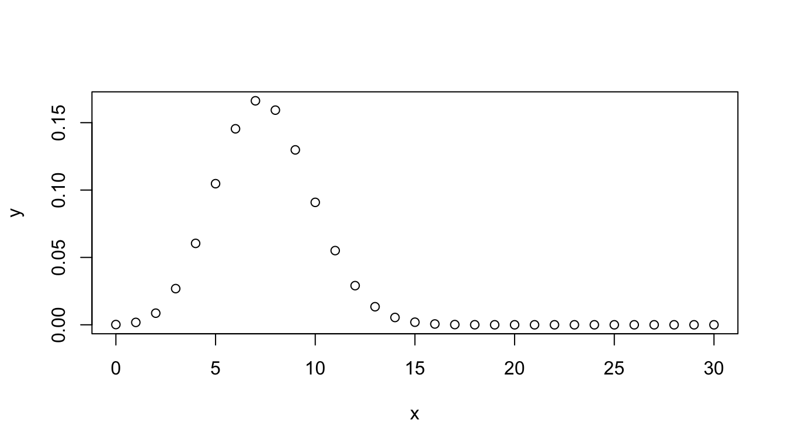
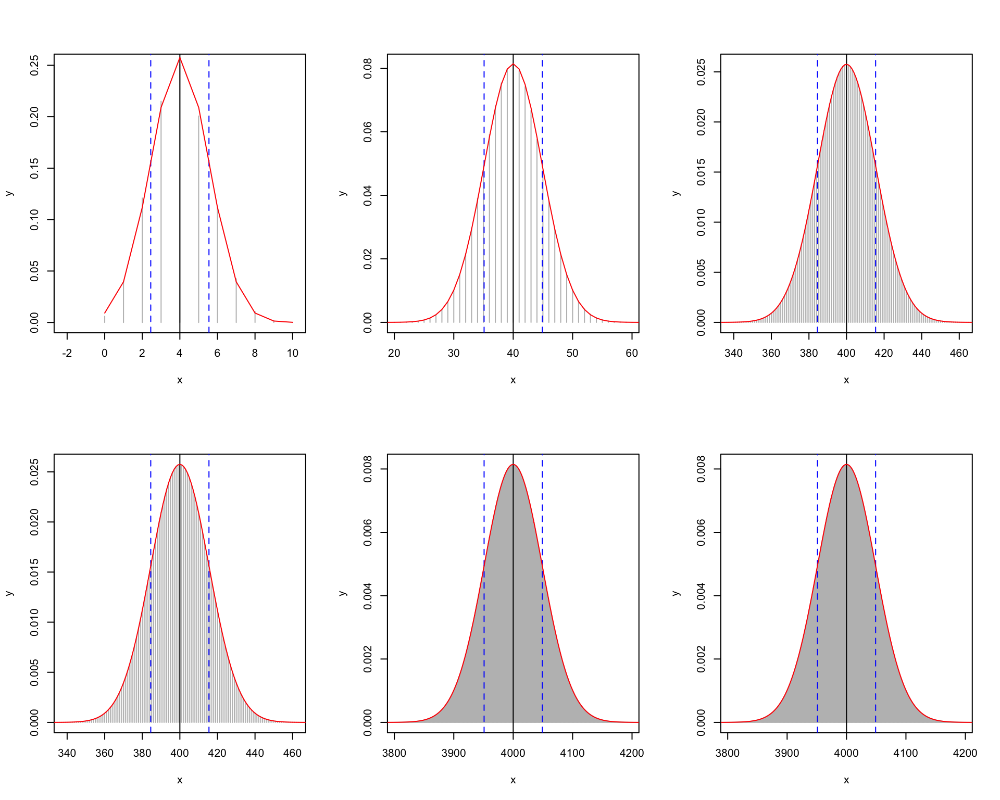

First steps with R
Probabilités et statistique pour la biologie (STAT1)
Jacques van Helden
2019-09-12
Goal of this tutorial
This tutorial aims at discovering the fundamental elements of the R statistical language.
We will briefly survey the following concepts.
Handling variables
- Assigning a value to a variable
- Basic operations on numbers
Basic data structures
- vectors
- matrices
- data.frames
- lists
Using functions
Graph drawing
Distributions of probabilities
Using R as a calculator
Example: an addition with R.
At the R prompt, type the following instruction and press the Enter key.
[1] 7The result (\(7\)) of the addition is printed out, preceded by an index \([1]\) (we will explain later why this index appears).
Assigning a value to a variable
In R, the succession of a the hyphen and “smaller than” characters (<-) serves to assign a value to a variable. If the variable does not exist yet, it is created.
For example
creates a variable named \(a\), and assigns it the value \(2\).
The result can be displayed with the print() function.
[1] 2Remarque : R permet également d’utiliser le symbole = pour effectuer une assignation. Cependant, nous préférons utiliser l’opérateur explicite <-, qui est également préconisé sur les guides de style
Conventions de notation en R
Il existe plusieurs conventions possibles pour les noms de variables, de fonction, les opérateurs, etc. Chaque langage de programmation a ses propres standards et recommandations. Pour ce cours nous suivons les recommandations de Google R style guide :
https://google.github.io/styleguide/Rguide.xml
Cependant, pour les identifiants de variables, la notation variable.name est traditionnelle mais pose problème aux personnes familières avec les langages orientés objet, et nous admettons donc la notation alternative en “dos de chameau” de type variableName. Attention, par convention les noms de variables commencent toujours par une minuscule.
Calculer avec des variables
- créer une variable nommée \(b\) avec une valeur \(5\),
- calculer \(a + b\) et enregistrer le résultat dans une variable nommée \(c\),
- imprimer le résultat.
[1] 2[1] 5[1] 7Assignation \(\neq\) égalité
- remplacer la valeur de \(a\) par \(3\),
- imprimer la valeur de \(c\)
- est-il toujours vrai que \(c = a + b\) ? Pourquoi ?
[1] 3[1] 5[1] 7[1] FALSENote: == indique qu’on teste si deux variables ont le même contenu. Le résultat est une valeur logique (TRUE ou FALSE).
Recalculer un résultat
Quand on change le contenu d’une variable \(a\), une autre variable (\(c\)) préalablement calculées à partir de cette variable n’a aucune raison d’être recalculée si on ne le demande pas explicitement.
Exemple:
- remplacer la valeur de \(a\) par \(27\),
- recalculer et imprimer la valeur de \(c\)
- tester l’égalité \(c = a + b\)
[1] 32[1] TRUEVecteurs de valeurs
En R, la structure de données la plus simple est un vecteur.
- Dans l’exemple précédent, la variable \(a\) ne contenait qu’un seul nombre, mais en pratique elle était stockée dans un vecteur à une seule entrée.
- La fonction
print()indique les indices en début de lignes, ce qui est utile quand on affiche des vecteurs avec un grand nombre d’entrées.
Exemple: créer une variable nommée trois.nombres, et l’initialiser avec un vecteur dont les valeurs sont 27, 12 and 3000.
Trucs: - en R, les noms de variables peuvent comporter plusieurs mots séparés par des points; - la fonction c() combine plusieurs valeurs en un vecteur.
[1] 27 12 3000Séries de nombres
La façon la plus simple de créer une série de nombre est d’utiliser le double point, qui génère toutes les valeurs entières entre deux limites.
[1] 0 1 2 3 4 5 6 7 8 9 10 11 12 13 14 15 16 17 18 19 20 21 22
[24] 23 24 25 26 27 28 29 30Note: si l’impression des valeurs du vecteur dépasse la largeur de la page, R passe à la ligne et indique en début de ligne l’indice du premier élément. Un ature exemple:
[1] 58 59 60 61 62 63 64 65 66 67 68 69 70 71 72 73 74
[18] 75 76 77 78 79 80 81 82 83 84 85 86 87 88 89 90 91
[35] 92 93 94 95 96 97 98 99 100 101 102 103 104 105 106 107 108
[52] 109 110 111 112 113 114 115 116 117 118 119 120 121 122 123 124 125
[69] 126 127 128 129 130 131 132 133 134 135 136 137 138 139 140 141 142
[86] 143 144 145 146 147 148 149 150 151 152 153 154 155 156 157Calculer avec des vecteurs
R permet de manipuler les vecteurs de façon extrêmement pratique. Une opération sur un vecteur s’applique automatiquement à tous ses éléments.
[1] 1 2 3 4 5 6 7 8 9 10 [1] 1 4 9 16 25 36 49 64 81 100Séquences de nombres
La fonction seq() permet de générer des séries de nombres avec un espacement arbitraire.
[1] -1.0 -0.9 -0.8 -0.7 -0.6 -0.5 -0.4 -0.3 -0.2 -0.1 0.0 0.1 0.2 0.3
[15] 0.4 0.5 0.6 0.7 0.8 0.9 1.0Les variables peuvent contenir du texte
Les variables ne se limitent pas aux nombres: elles peuvent contenir du texte (“chaînes de caractères”, “strings” en anglais).
Ici également, nous utilisons la fonction c() pour combiner plusieurs chaînes de caractères dans un vecteur.
# The # symbol allows to insert comments in R code
# Define a vector named "whoami", and
# containing two names
whoami <- c("Denis", "Siméon")
print(whoami) # Comment at the end of a line[1] "Denis" "Siméon"Concaténation de chaînes de caractèrs
La fonction paste() permet de concaténer les variables contenant du texte.
# To concatenate the elements of a vector in a single chain, use "collapse"
prenom.complet <- paste(collapse = " ", whoami)
print(prenom.complet)[1] "Denis Siméon"# TO concatenate two vectors, use "sep"
nom <- "Poisson"
print(paste(sep = " ", prenom.complet, nom))[1] "Denis Siméon Poisson"## Concatenate 2 vectors with 3 values each
prenoms <- c("George", "Alfred", "Frédéric")
noms <- c("Sand", "Musset", "Chopin")
paste(sep = " ", prenoms, noms)[1] "George Sand" "Alfred Musset" "Frédéric Chopin"Fonctions graphiques
R comporte un grand nombre de fonctions permettant de dessiner des graphiques simples ou élaborés. Nous allons explorer ici les méthodes les plus simples.


Améliorer un dessin
Exercice: lisez l’aide de la fonction plot() en tapant help(plot), et explorez les paramètres afin d’améliorer le graphique. Consultez également l’aide de la fonction par() (paramètres graphiques).
Vous pouvez par exemple ajouter les éléments suivants:
- titre
- étiquettes des axes
- coloration de la courbe
- épaisseur de la courbe
- grille
- tracer une droite horizontale sur l’axe \(X=0\)
- tracer une droite verticale sur l’axe \(Y=0\)
- tout autre paramètre qui améliorera la lisibilité du résultat
La solution se trouve sur la diapo suivante (ne regardez pas !).
Solution
Faites tourner le code-ci-dessous pour afficher le résultat.
x <- seq(from = -10, to = 10, by = 0.1)
y <- x^2
plot(x,y,
type="l", # Plot type
main = "Parabole", # Main title
xlab = "x", #X label
ylab = "y = x^2", # Y label
col = "blue", # Curve color
lwd = 3, # Line width
las = 1 # display axis labels horizontally
)
grid(lty = "dashed", col="gray") # Grid
abline(h = 0) # Horizontal line
abline(v = 0) # Vertical lineDistributions de probabilités
R fournit 4 fonctions pour chacune des des distributions de probabilité classiques.
Avant d’aller plus loin, lisez attentivement l’aide pour les fonctions associées à la distribution binomiale.
Questions:
- Quelle est la fonction R qui permet de calculer la fonction de masse de probabilité (également appelée “densité”) ?
- Quelle fonction R correspond à la fonction de répartition (également appelée “fonction de distribution”) ?
- A quoi sert la fonction rbinom() ?
Graphe de la binomiale
Exercice: en supposant des nucléotides équiprobables et indépendants, dessiner la distribution de probabilité du nombre d’adénines pour un oligonucléotide de taille 30.
- fonction de masse de la probabilité
- fonction de répartition
Dans les diapos suivantes, nous vous guidons pas à pas pour débuter l’exercice, et vous pourrez ensuite améliorer le résultat à vote guise.
Formule de la solution
Le nombre d’adénines peut prendre n’importe quelle valeur entre \(0\) et \(30\). On peut modéliser le problème comme un schéma de Bernoulli avec \(n=30\) essais pouvant chacun résulter en un succès (une adénine) avec une probabilité \(p=0.25\), ou un échec (tout autre nucléotide), avec une probabilité \(q = 1-p = 0.75\).
La probabilité d’observer exactement \(x\) adénine vaut donc.
\[P(X=x) = \binom{n}{x} p^x (1-p)^{n-x} = \frac{30!}{x!(30-x)!} \cdot 0.25^x \cdot 0.75^{n-x}\] où \(x\) peut prendre n’importe quelle valeur entre \(0\) et \(30\).
Calcul de la fonction de masse de probabilité
Sous-ensemble des valeurs d’un vecteur
Nous pouvons imprimer les 4 premières valeurs de la variable pmf (pour \(x\) de \(0\) à \(3\)) …
[1] 0.0001785821 0.0017858209 0.0086314677 0.0268534550 0.0604202738… ou les 4 dernières valeurs (pour \(x\) de \(27\) à \(30\)).
[1] 1.925374e-12 9.508019e-14 3.395721e-15 7.806256e-17Restriction du nombre de décimales
La fonction round() arrondit un résultat à un nombre donné de décimales.
[1] 0.000 0.002 0.009 0.027 0.060 0.105 0.145 0.166 0.159 0.130 0.091
[12] 0.055 0.029 0.013 0.005 0.002 0.001 0.000 0.000 0.000 0.000 0.000
[23] 0.000 0.000 0.000 0.000 0.000 0.000 0.000 0.000 0.000Pour des distributions de probabilités, on descend assez facilement à des valeurs très faibles, dont on désire connaître l’ordre de grandeur tout en affichant un nombre raisonnable de chiffres significatifs (ceux qui suivent la première décimale non nulle). Pour cela, il est plus pratique d’utiliser la fonction signif(),
[1] 1.79e-04 1.79e-03 8.63e-03 2.69e-02 6.04e-02 1.05e-01 1.45e-01
[8] 1.66e-01 1.59e-01 1.30e-01 9.09e-02 5.51e-02 2.91e-02 1.34e-02
[15] 5.43e-03 1.93e-03 6.03e-04 1.66e-04 3.99e-05 8.39e-06 1.54e-06
[22] 2.44e-07 3.33e-08 3.86e-09 3.75e-10 3.00e-11 1.93e-12 9.51e-14
[29] 3.40e-15 7.81e-17 8.67e-19Dessin de la distribution binomiale
n <- 30; x <- 0:n # Define the X values from 0 to 14
y <- dbinom(x = x, size = n, prob = 0.25) # Poisson density
plot(x,y) # Check the result
Ce premier dessin n’est pas très élégant. Les points ne se détachent pas très bien du fond. Nous allons améliorer ce dessin.
Exercice 1 : améliorer le dessin de la binomiale
Utilisez les différentes option de la fonction plot() pour mieux mettre en évidence la forme de la distribution (résultat attendu sur la diapo suivante).
Commencez par choisir un type de points (option
type) qui donne l’impression de la hauteur de la probabilité (valeur \(Y\)) correspondant à chaque point de l’axe \(X\).Ajoutez un titre (option
main) et adaptez les légendes aux axes (optionsxlabetylab)Colorez le dessin (option
col)Epaississez les traits (option
lwd)Ajoutez une grille horizontale (fonction
grid())Assurez-vous que les étiquettes des axes soient toutes horizontales (option
las).
Résultat attendu

Exercice: série de courbes binomiales
Dessinez une série de courbes binomiales avec \(n=30\) essais, et des valeurs de \(p\) allant de \(0.1\) à \(0.9\) par pas de \(0.1\).

Exercice: convergence de la binomiale vers une normale

Avant de terminer : conservez la trace de votre session
La traçabilité constitue un enjeu essentiel en sciences. La fonction R sessionInfo() fournit un résumé des conditions d’une session de travail: version de R, système opérateur, bibliothèques de fonctions utilisées.
R version 3.6.1 (2019-07-05)
Platform: x86_64-apple-darwin15.6.0 (64-bit)
Running under: macOS Mojave 10.14.6
Matrix products: default
BLAS: /Library/Frameworks/R.framework/Versions/3.6/Resources/lib/libRblas.0.dylib
LAPACK: /Library/Frameworks/R.framework/Versions/3.6/Resources/lib/libRlapack.dylib
locale:
[1] en_US.UTF-8/en_US.UTF-8/en_US.UTF-8/C/en_US.UTF-8/en_US.UTF-8
attached base packages:
[1] stats graphics grDevices utils datasets methods base
other attached packages:
[1] knitr_1.23
loaded via a namespace (and not attached):
[1] compiler_3.6.1 magrittr_1.5 tools_3.6.1 htmltools_0.3.6
[5] yaml_2.2.0 Rcpp_1.0.2 stringi_1.4.3 rmarkdown_1.14
[9] stringr_1.4.0 xfun_0.8 digest_0.6.20 evaluate_0.14